| 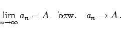 | (7.6) |
| Beispiel |
|
Von den Folgen in den Beispielen A bis J sind konvergent: die Folge in C mit 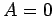, in E mit 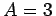, in F mit 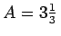, und in G mit . |
| 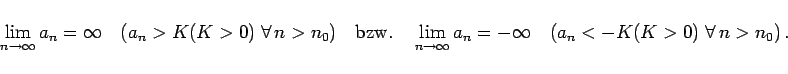 | (7.7) |
Anderenfalls spricht man von unbestimmter Divergenz.
| Beispiel A |
|
Von den Folgen in den Beispielen A bis J sind die Folgen A und B gegen 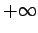 bestimmt divergent. |
| Beispiel B |
|
Von den Folgen in den Beispielen A bis J ist die Folge D unbestimmt divergent. |
| 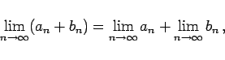 | (7.8) |
| 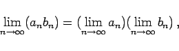 | (7.9) |
| 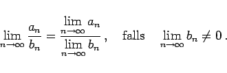 | (7.10) |
Hinweis: Wenn 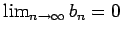 gilt und die Folge {an} beschränkt ist, dann gilt
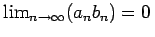 sogar dann, wenn 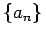 keinen endlichen Grenzwert hat.
| 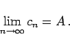 | (7.11) |